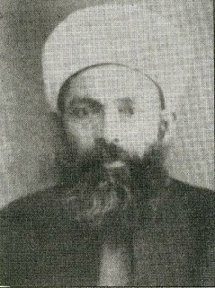

Seyyid Mehmet Þefik Arvasî (1884-1970)

Mehmet Þefik 1884 tarihinde Bitlis’in Hizan ilçesine baðlý Arvas Köyünde doðdu. Bu tarihlerde Bitlis ve çevresinde önemli simalarýn yetiþtiði ve bölgede yetiþen âlimlerin daha sonra önemli bir üne sahip olduklarý bilinmektedir. Mehmet Þefik de erken yaþlardan itibaren eðitim görmeye baþladý.Bediüzzaman’ýn ilk talebelerinden olup Van’daki Horhor Medresesi’nde ders aldý ve burada talebelik yaptý. Ancak, bunun dýþýndaki eðitimi kimlerden ve ne þekilde aldýðý hakkýnda ayrýntýlý bilgi yoktur. Gerek Horhor’da gördüðü eðitim ve gerekse öncesinden aldýðý ders ve eðitimle iyi bir birikime sahip olduðu, özellikle Arapça’ya vukufiyetinin çok iyi olduðu tercümelerinden anlaþýlmaktadýr.
Bediüzzaman’ýn ilk talebelerinden olan Mehmet Þefik, Horhor Medresesi’nde ders görmekte iken, henüz Birinci Dünya Savaþý baþlamamýþtý. Talebelerine ders veren Bediüzzaman; “maddî ve mânevî” büyük zelzelenin yaklaþtýðýný haber verirken; Mehmed Sadýk, Sabri, Mehmed Mihri ve Hamza adlý talebeleri ile birlikte bu söylenen sözlere Mehmed Þefik de þahitlik etmiþtir. “Evet, Üstadýmýz mükerreren Birinci Harb-i Umumîden evvel çok defa bize ulûm-ý Arabiyeyi ders verdiði zaman bize kat’î bir tarzda ‘Büyük ve umumî bir zelzele yaklaþýyor, hazýrlanýnýz. O zaman herkes benim gibi mücerretlere gýpta edecek’ diye söylüyorlardý. Pek az zamanda, onun mükerreren verdiði haber aynen çýktý. Horhor’daki eski talebeleri namýna…” (Emirdað Lâhikasý, s. 325).
Seyyid Þefik, büyük bir ihtimalle bir süre Horhor Medresesi’nde eðitim gördükten sonra Ýstanbul’a gitti. Çünkü, Ýstanbul’a geldiði dönem Osmanlý dönemidir. Ýstanbul’a gelip yerleþince Fatih Medresesi’nin Sahn kýsmý için yapýlan imtihana katýldý. Bu imtihana katýlým çok yüksek olup sekiz yüz kiþi müracaatta bulundu. Ancak, bunlarýn içinde sadece sekiz kiþi baþarýlý olabildi. Mehmed Þefik bu sekiz kiþi arasýna girmeyi baþardý ve imtihaný kazandý.
Birinci Dünya Savaþý gibi büyük bir felâket ve sonrasýnda iþgallere karþý verilen Kurtuluþ Savaþý gibi büyük olaylar yaþandý. Yeni bir ülke kuruldu ve yeni geliþmeler birbirini takip etti. Bu arada birçok insanýmýz hayatýný kaybedip þehitlik mertebesine yükseldi. Çoðu insanýn yeri yurdu deðiþti. Akraba ve dostlar arasýndaki irtibatlar koptu. Çok sayýda insan birbirinden habersiz hayatýný devam ettirdi. Bütün bu büyük felâketlerden sonra Mehmet Þefik Bediüzzaman Hazretleri ile baðýný koparmadýðý gibi talebeliðini devam ettirdi.
Mehmed Þefik Arvasî de takibata uðrayan ve hapis yatanlardan birisi oldu. 1943 yýlýnda tutuklandý. Tutuklandýðý zaman Ýstanbul’da bulunmakta idi. Tutuklandýktan sonra, önce kýrk bir gün gibi uzun bir süre Ýstanbul Emniyet Müdürlüðü’nde tutuldu. Ardýndan Denizli’ye nakledildi. Denizli Hapishanesi’nde Bediüzzaman Hazretleri ile birlikte (bir süre ayný koðuþta) dokuz ay tutuklu kaldý. Bu sürenin sonunda hakkýnda beraat kararý verildi. Soyadý Kanunu çýkýnca Arvasi soyadýný almak istemiþti. Ancak, nüfus memuru bunu yazýya dökerken Arvasi yerine Eryuvasý’ný yazmýþ ve bu þekilde soyadýný almýþtý. Denizli Hapishanesi’nden tahliye olurken de bir yanlýþlýk daha yapýldý. Mehmed Þefik adý yerine, kayýtlara ismi Mehmed Þerif olarak geçti (Necmeddin Þahiner; Son Þahitler, 1. C., s. 53).
Risâle-i Nurda ismi sýkça zikredilen simalardan biri olan Seyyid Þefik Arvasî, Bediüzzaman’a deðiþik vesilelerle mektup yazdý ve duygularýný dile getirdi. Risâle-i Nurdan Otuz Üçüncü Söz eline geçince Üstadýna hitaben; “ Þifahane-i kalbinizden tulû eden ‘Otuz Üçüncü Söz’ünüzle otuz üç cihetten marîz olan kalb-i mecruhumuzu tedavi buyurmanýzý bilhassa istirham eylerim.” (Barla Lâhikasý, s. 41) demek suretiyle samimî hislerini ifade etti.
Seyyid Þefik’e “kahraman” diye hitap eden Bediüzzaman, bu talebesinin Ýstanbul’daki duruþunu þöyle överek nakletmektedir: “ … Þimdi bizimle uðraþan ve Abdülbâki ve Abdülhakîm ve Hacý Süleyman’ý nefyeden ve Yeþil Þemsi’yi tahliyeden sonra burada durduran adamlar, elbette Hâfýz Mehmed ve Seyyid Þefik gibi salâbet-i diniyeleri ile ve onlarýn ölmüþ reislerine ve suretine baþ eðmemesiyle ve ilhad ve bid’alara taraftarlýklarýný göstermemesiyle beraber, serbest býrakmamak ihtimalini de, hem Risâle-i Nur’un tesettür perdesinden çýkýp gayet büyük ve umumî bir meselede kendi kendine merkezlerinde mübarezesi zamanýnda þakirtlerini arkasýnda bulmak ve kaçmamakla sarsýlmaz ve maðlûp olmaz bir hakikata baðlandýklarýný mütereddit ve mütehayyir ehl-i imana göstermesi gayet lüzumlu olduðunu dahi nazarýnýza…” (Þuâlar s. 289).
Talebelerine Risâle-i Nur nüshalarýný gönderen Bediüzzaman, bu nüshalarýn çoðaltýlmasý ve özellikle Arabi ibareler hususunda Seyyid Þefik’ten istifade etmelerini tavsiye ediyordu. Hem yazým, hem de tashih hususunda talebelerini ikaz ederek; “… Hattý güzel bir zatý bulup size, kendinize istinsah etsen çok iyi olur. Fakat tashihine dikkat edilsin. Bir iki defa, kardeþim Seyyid Þefik’in muavenetiyle mukabele edilsin... Ýki Risâleyi Seyyid Þefik’in taht-ý nezaretinde tashihine gayet dikkat etmek þartýyla çabuk tab ediniz…” (Barla Lâhikasý, s. 131) demektedir. Bir ara irtibatýn koptuðu, Bediüzzaman Hazretlerinin bir mektubundaki; “Hapishanede, Risâle-i Nur’un son kâtibi kahraman Þefik acaba sað mýdýr? Nerededir? Merak ediyorum. Halil Ýbrahim’den sorunuz.” (Kastamonu L. 93) ifadesinden anlaþýlmaktadýr.
Seyyid Mehmet Þefik Ýstanbul’da bulunduðu uzun zaman zarfýnda muhtelif görevlerde bulundu. Ýstanbul Müftülüðü Mushaflarý Tedkik Heyeti Reisliði, Sultan Ahmed Camisi Baþimamlýðý, Eyüp Camisi’nde vaizlik gibi hizmetleri ifa etti. Sultan Ahmed Camisi Baþimamlýðýný vefatýna kadar devam ettirdi. Kaleme aldýðý, “Peygamber Efendimizden Hutbeler ve Sohbetler” adlý eseri neþredildi. Çok sayýda kiþiye hocalýk yaptý.
Ýstanbul’da bulunurken Eyüp Sultan’da ikamet etti. 13 Mart 1970 tarihinde yine Ýstanbul’da vefat etti. Vefatýndan altý ay önce doktor olan oðlunun bir trafik kazasý neticesi vefat haberini alýrken büyük bir metanet ve tevekkül örneði sergiledi.